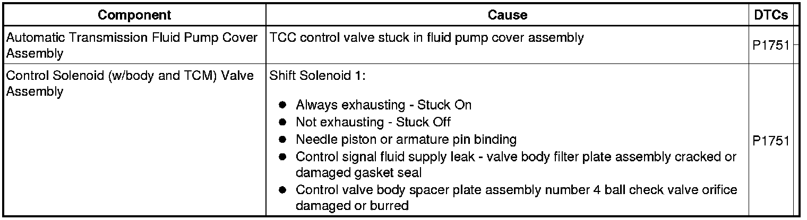

P1751
DTC P1751
Diagnostic Instructions
* Perform the Diagnostic System Check - Vehicle (Initial Inspection and Diagnostic Overview) prior to using this diagnostic procedure.
* Review Strategy Based Diagnosis (Initial Inspection and Diagnostic Overview) for an overview of the diagnostic approach.
* Diagnostic Procedure Instructions (Initial Inspection and Diagnostic Overview) provides an overview of each diagnostic category.
DTC Descriptor
DTC P1751
- Shift Valve 1 Performance
Diagnostic Fault Information
The following fault table will help determine if a hydraulic circuit or an incorrect position of a valve train component affects the transmission operation.

Circuit/System Description
The shift valve 1 (clutch select valve 2) is part of the lower control valve body. The shift valve 1 (clutch select valve 2) controls fluid to the R1 and 4-5-6 clutches. During this diagnostic test, intrusive actions are taken by the transmission control module (TCM) to test the clutch select valve 2 to see if the valve is stuck. The TCM commands the shift solenoid (SS) 1 ON to put pressure on the valve toward the spring and at the same time, elevates line pressure slightly to assist the spring side pressure. If the spring is broken, the valve will slip back toward the spring indicating a mechanical failure and the DTC will set.
Conditions for Running the DTC
* No DTCs P0716 or P0717.
* No DTCs P0722 or P0723.
* No DTCs P2763, P2763, or P2764.
* No DTCs P0741 or P0742.
* The engine run time is greater than 5 seconds.
* The transmission fluid temperature (TFT) is 20-130°C (68-266°F).
* The calculated throttle position is between 8-90 percent.
* The engine torque is greater than 50 N.m (36 lb ft).
* No upshift or downshift in process.
* DTC P0742 has not passed or failed for this torque converter clutch (TCC) cycle.
* The attained gear slip is equal to or greater than 70 RPM.
Conditions for Setting the DTC
The TCM detects attained gear slip greater than 75 RPM for 0.5 seconds.
Action Taken When the DTC Sets
DTC P1751 is a Type B DTC.
Conditions for Clearing the DTC
* DTC P1751 is a Type B DTC.
* The TCM freezes transmission adaptive functions.
Diagnostic Aids
When attempting to set transmission performance DTCs, observe the Freeze Frame and Failure Records to assist in duplicating the failure conditions. Ensure the transmission fluid level is correct and there are no leaks.
Reference Information
Schematic Reference
Automatic Transmission Controls Schematics (Electrical Diagrams)
Connector End View Reference
Component Connector End Views (Connector Views)
Electrical Information Reference
* Circuit Testing (Component Tests and General Diagnostics)
* Connector Repairs (Component Tests and General Diagnostics)
* Testing for Intermittent Conditions and Poor Connections (Component Tests and General Diagnostics)
* Wiring Repairs (Component Tests and General Diagnostics)
Description and Operation
Transmission Component and System Description (Transmission Component and System Description)
DTC Type Reference
Powertrain Diagnostic Trouble Code (DTC) Type Definitions (Diagnostic Trouble Code Descriptions)
Scan Tool Reference
Control Module References (Programming and Relearning) for scan tool information
Circuit/System Verification
Operate the vehicle in drive with the calculated throttle position greater than 8 percent and ensure the TCC is commanded ON and OFF a minimum of 5 times.
If the DTC resets, go to Component Testing.
Component Testing
Inspect the lower control valve body for a stuck clutch select valve 2, a broken clutch select valve 2 spring, debris or damage.
If you found a valve body concern, repair or replace the lower control valve body as necessary.
Repair Instructions
Perform the Diagnostic Repair Verification (Verification Tests) after completing the diagnostic procedure.
* Replace the control valve body. Refer to Control Valve Lower Body and Upper Body Replacement (Service and Repair) .
* Perform the Service Fast Learn Adapts (Programming and Relearning) if internal transmission repairs are performed.